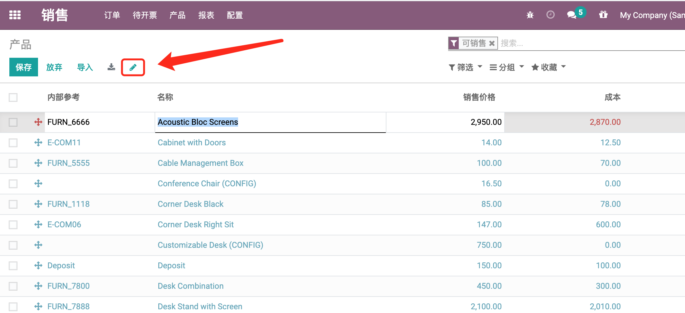
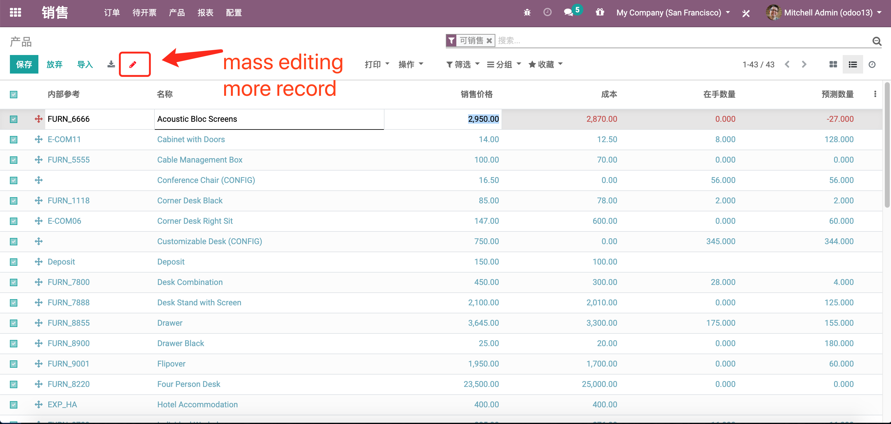

Tree Edit or Mass Editing
Tree视图可编辑 或者Mass Editing修改
sometimes this is very upset that tree view could not edit!
so, you need this module .
有时，tree视图不能直接编辑让人很恼火，你需要这个模块帮忙
there are two mode with this module, one is edit only one record!
you only click the icon to active it!
这个模块有两种模式，一种是只编辑一个记录。
你只需要点击一下图标就可以激活

the other mode is mass editing ,it can edit many record with same value!
you need to long press the icon to active it! and select more record !
另外一种是mass editing 模式，它可以一次用相同的值修改多个记录！
你需要长按图标激活它,同时勾选多个记录！

pay attention! when tree view use the multi-edit='1',
the icon will be yellow in the initialize.
注意！如果tree view使用了 multi-edit='1',
图标会开始的时候变黄色。